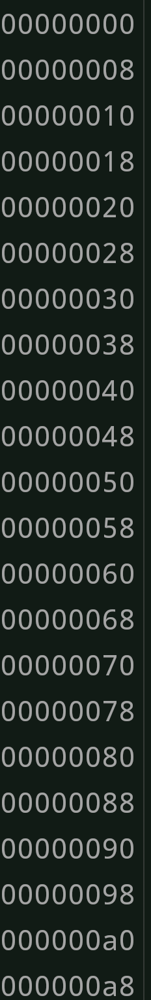
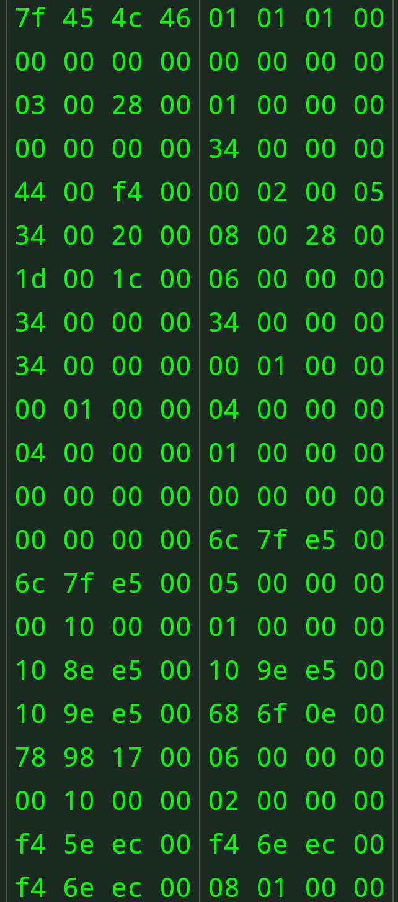
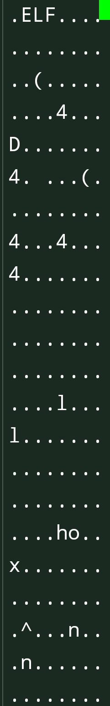

Informação e conhecimento
Hackear arquivos de forma profissional usando hex editor
(1) Hex Editor, é um programa que permite ao usuário manipular arquivos editando bytes em hex; decimal ou ascii.
(2) Um hex editor geralmente é usado para modificar arquivos binários, pois tem a capacidade de alterar cada byte do arquivo. Ao contrário de um editor de texto que manipula cada byte do arquivo como um caractere de texto.
(3) Técnicas como hacking de rom são feitas usando editores hexadecimais para traduzir jogos ou para implementar outras modificações nele.
(4) Na engenharia reversa, ele pode ser usado para fazer modificações simples ou obter informações básicas do programas.
A área de endereços nos ajuda a localizar a linha do valor em hexadecimal.

A área hexadecimal mostra os caracteres; símbolos; letras e números. Eles são convertidos usado bytes.

A área do bloco de anotações mostra os dados do arquivo. Símbolos, caracteres, letras e números.
